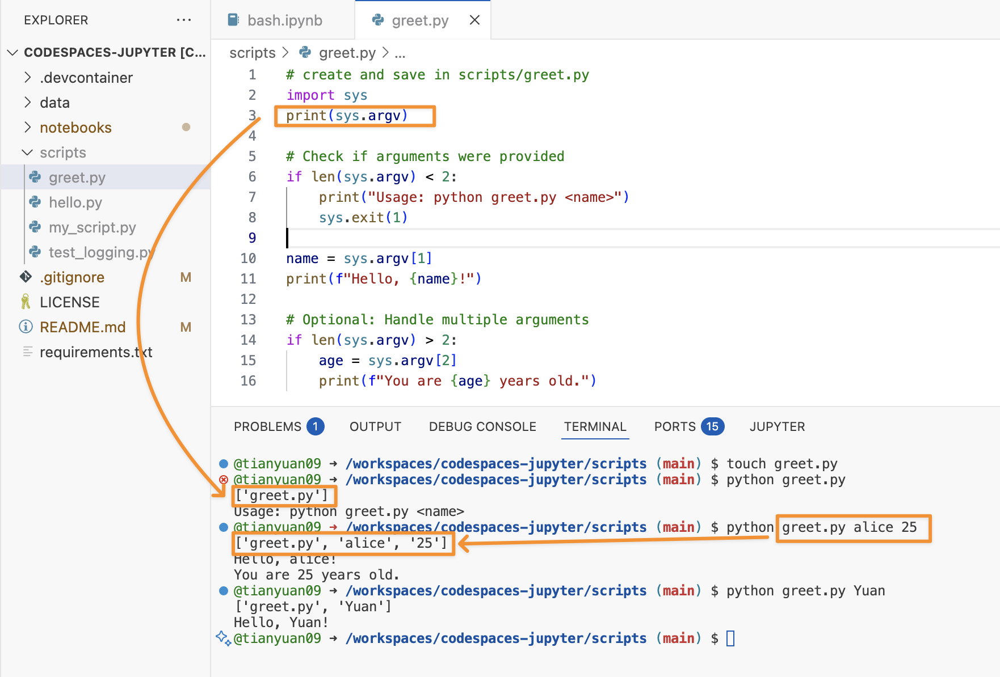
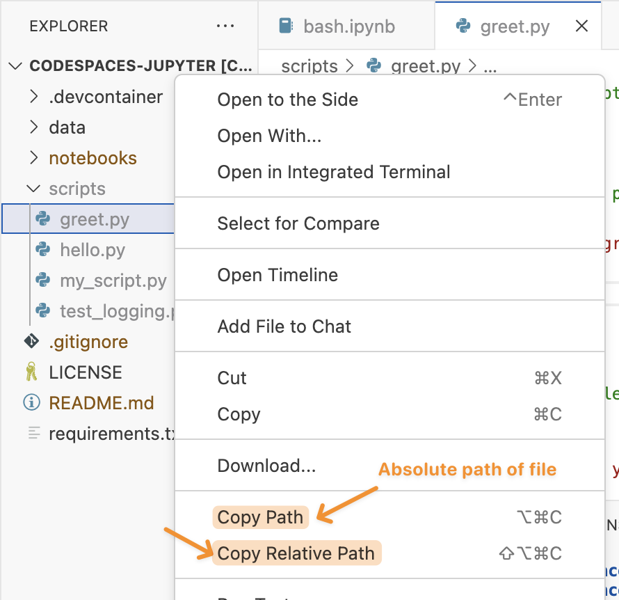
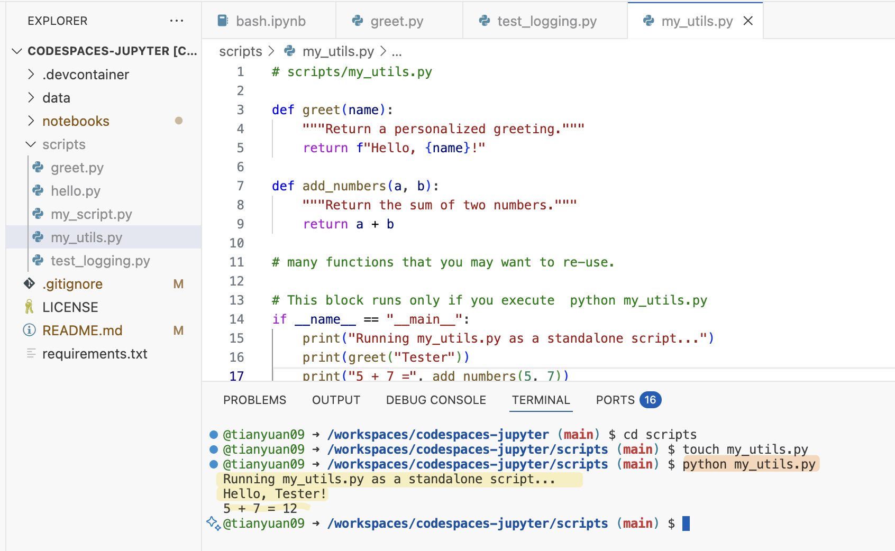
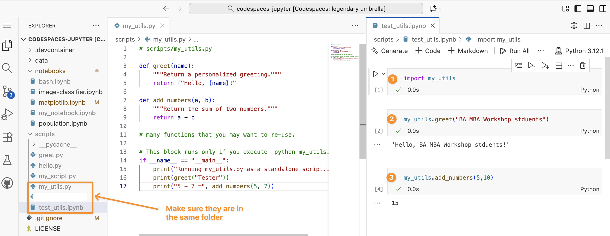
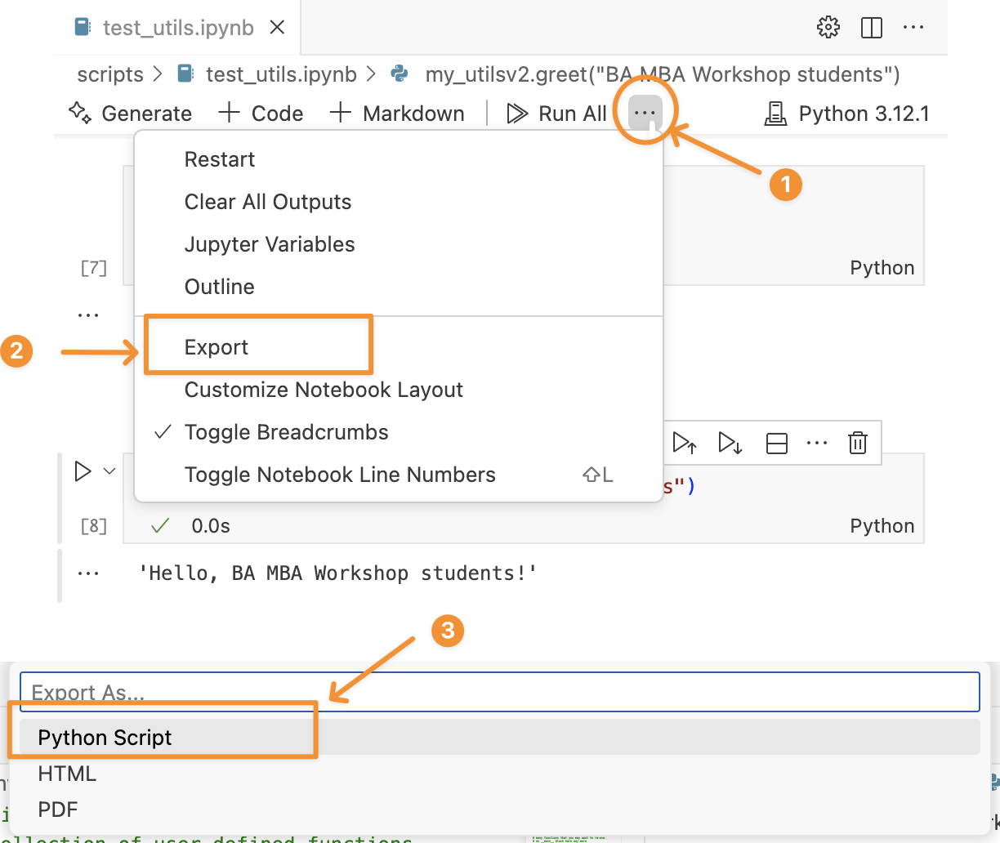

2 Run .py scripts with Bash
2.1 Why Run Python Scripts from Terminal?
While interactive environments like Jupyter notebooks are great for exploration and prototyping, running Python scripts (.py files) from the terminal is essential for:
- Production workflows: Automated data processing, model training, and deployment
- Server environments: Most servers don’t have graphical interfaces
- Batch processing: Running scripts on large datasets or multiple files
- Scheduling: Using cron jobs or task schedulers to run scripts automatically
- Command-line arguments: Passing parameters to scripts dynamically
- Performance: Scripts often run faster than notebooks for large tasks
Data scientists often submit training jobs via Bash scripts like:
python train_model.py --epochs 10It runs the Python script train_model.py to train the model for 10 epochs.
2.2 .ipynb Notebook vs .py Script Files
Figure 2.1 illustrates the difference between running Python code in .ipynb notebook versus in `.py’ script file.
Understanding the Terminal
See directory structure in codespaces in the previous chapter.
In the terminal, it always starts with:
@tianyuan09 ➜ /workspaces/codespaces-jupyter (main) $.
@tianyuan09 ➜ /workspaces/codespaces-jupyter (main) $
│ │ │ │
│ │ │ └─ Prompt symbol ($):
│ │ │ shows the terminal is ready for input
│ │ │
│ │ └─ Current working directory:
│ │ you’re inside the folder “codespaces-jupyter”
│ │ located under “/workspaces”
│ │
│ └─ Arrow (➜):
│ just a decorative separator in the prompt
│
└─ Username (and sometimes host):
“tianyuan09” — the current user logged into this environmentDifference between .ipynb Notebook and .py Script File.
| Feature | .ipynb (Jupyter Notebook) |
.py (Python Script) |
|---|---|---|
| Structure | Structured JSON format combining code, text cells in Markdown, and outputs. | Plain text file containing only Python code and comments #. |
| Execution | Run one cell at a time, showing output immediately below each cell. | Executed all at once using a command like python my_script.py, seen ④ in Figure 2.1. |
| Use Case | Ideal for data analysis, visualization, and teaching due to its interactive nature. | Better for automation, deployment of production-ready code. |
2.2.1 Lab: Create and run a .py script file
First, let’s create a hello.py under the scripts folder.
# file path: scripts/hello.py
print("Hello from Python!")
print("This script is running from the terminal.")
# Get current date and time
import datetime
now = datetime.datetime.now()
print(f"Current time: {now}")You can directly use explorer or use bash command Figure 2.2.
Expected output:
Hello from Python!
This script is running from the terminal.
Current time: 2025-10-13 10:30:45.1234562.4 Working with Command-Line Arguments
2.4.1 Creating a Script with Arguments
.py files with arguments allow the users to provide input directly when running the script. Please work on the following example.
# create and save in scripts/greet.py
import sys
print(sys.argv) # sys.argv is a list of string typed after python in the bash
# Check if arguments were provided
if len(sys.argv) < 2:
print("Usage: python greet.py <name>")
sys.exit(1)
name = sys.argv[1]
print(f"Hello, {name}!")
# Optional: Handle multiple arguments
if len(sys.argv) > 2:
age = sys.argv[2]
print(f"You are {age} years old.")2.4.2 Running with Arguments
# Run with one argument
python greet.py Alice
# Run with multiple arguments
python greet.py Bob 25
# Without arguments (will show usage message)
python greet.py
2.4.2.1 sys.argv — what it really is
sys.argv is a list of strings containing everything typed after python in the terminal.
For example, if you run:
python greet.py Alice 25Then in Python:
import sys
print(sys.argv)
# output: ['greet.py', 'Alice', '25'] # a list2.4.2.2 Index meaning
| Index | Value | Meaning |
|---|---|---|
sys.argv[0] |
'greet.py' |
the name of the script file being executed |
sys.argv[1] |
'Alice' |
the first argument typed after the script name |
sys.argv[2] |
'25' |
the second argument (if given) |
2.4.2.3 why name = sys.argv[1]?
Because:
sys.argv[0]is always the script name (greet.py)sys.argv[1]is the first real argument that the user provides. In this case, the person’s name.
If you used sys.argv[0], it would just say: Hello, greet.py!
2.5 Running Scripts in Different Directories.
2.5.1 Absolute Paths
# Run script from anywhere using absolute path
python /Users/username/projects/my_script.py/Users/username/projects/my_script.py is a absolute file path.
Absolute paths:
- On macOS/Linux, starts with
/. - On Windows, starts with a drive letter like
C:/. - In short, it always starts from the root of the filesystem (the top level).
You can find either the relative or aboslute file paths in codespaces:

2.5.2 Relative Paths
# Run script in current directory
python ./script.py
# Run script in subdirectory
python scripts/data_analysis.py
# Run script in parent directory
python ../utilities/helper.pyThe paths above (e.g. ../utilities/helper.py) are relative paths.
- They don’t start with
/or a drive letter (e.g.C:/). - They may include
.(current folder) or..(parent folder). - They starts from your current working directory (
pwd).
2.5.3 Difference in absolute vs relative paths
| Starts With | Type | Meaning |
|---|---|---|
/ (Linux/Mac) |
Absolute | Starts at root of file system |
C:\ (Windows) |
Absolute | Starts at root of drive |
. or .. |
Relative | Based on current working directory |
No / or C:\ |
Relative | Implied to start from current folder |
2.5.4 Changing Directories
# Navigate to script directory, then run
cd /path/to/scripts
python analysis.py
# Or combine in one line
cd /path/to/scripts && python analysis.py2.6 Make a .py file as a module
2.6.1 Python module review
Python modules and packages generally fall into four categories: built-in, standard library, third-party, and user-defined (see in Figure 2.4). So far, you’ve worked with the first three — modules that come with Python (e.g., datetime) or are installed from external sources (e.g., pandas).
2.6.2 Create a user-defined Module in .py file
In this section, you’ll learn how to create your own .py module with reuseable functions – one that can be both imported into a Colab notebook and run independently for testing.
Create my_util.py in the scripts folder.
# scripts/my_utils.py
def greet(name):
"""Return a personalized greeting."""
return f"Hello, {name}!"
def add_numbers(a, b):
"""Return the sum of two numbers."""
return a + b
# many functions that you may want to re-use.
# This block runs only if you execute `python my_utils.py`
# This will make the .py file both run alone or import as a module
if __name__ == "__main__":
print("Running my_utils.py as a standalone script...")
print(greet("Tester"))
print("5 + 7 =", add_numbers(5, 7))Option 1: Run as a standalone .py file
python scripts/my_utils.py
Option 2: Run as a user-defined modules with reusable functions
Create a test_util.ipynb file in the same folder as your my_utils.py file. Then, you can do import my_utils to use it like any module/package that you have used before.

if __name__ == "__main__" do?
__name__ is a special variable that Python automatically sets when a file is run or imported.
If the file is run directly (e.g.,
python my_utils.py),__name__becomes"__main__".If the file is imported (e.g.,
import my_utils),__name__becomes the module’s name ("my_utils").if __name__ == "__main__"ensures that code inside it runs only when the file is executed directly, not when imported. This allows a.pyfile to act as both:- a reusable module (when imported)
- a standalone script for testing or demos (when run directly).
if __name__ == "__main__": line
If you do that, and then import the module, any code at the bottom of the file will run automatically during import, which can cause unwanted behavior (like printing, running tests, or altering data), see Figure 2.5.
__main__
The if __name__ == "__main__": line isn’t required for a module to work, but it helps keep your code tidy and organized, allowing the file to be used both as a reusable module and as a standalone script with testing.
You also can import a single or multiple functions in a .py file.
# import the greet(), add_numbers() functions
from my_utils import greet, add_numbers
print(greet("Bob")) # Output: Hello, Bob!
print(add_numbers(10, 5)) # Output: 10 + 5 = 152.6.3 Download .ipynb file as a .py file
